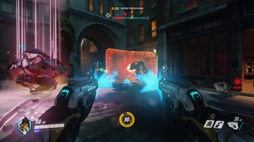

Gameplay
Players are assigned into two teams of six and they have to choose a hero with unique abilities to play as. The teams are working to complete objectives that are specific to the map within a time limit. New characters, maps and game modes have been added since release.

There are 3 main character roles in Overwatch:
- Damage: powerful abilities to deal large amounts of damage or defend certain points;
- Tank: large amount of armor and hit points to withstand enemy attacks and draw fire away from teammates;
- Support: provide buffs and debuffs for their allies and enemies respectively (such as healing or speed alterations).
Each hero has a number of abilities:
- A primary ability;
- At least 2 additional abilities that can be used at any moment, with certain ones having a cooldown period;
- An "ultimate" ability, which has a meter that fills slowly over time, but can be increased faster by defeating opponents or performing other beneficial tasks for their team such as healing other team members. Once ready, the ability can be used at any time and it may last for a few seconds (such as increased attack strength or immunity to attacks) or can be a single powerful action (such as throwing an explosive), after which the meter empties and must be built up again.